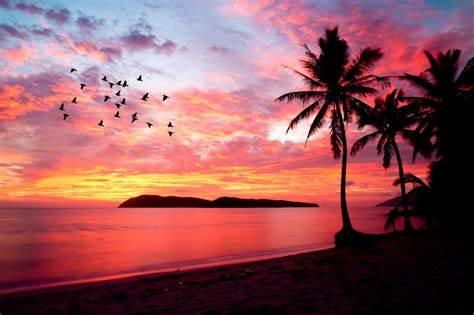
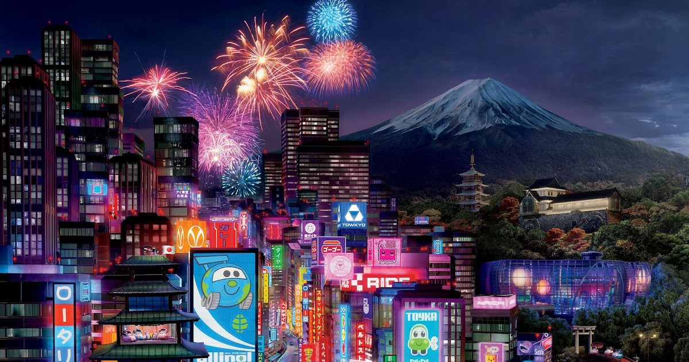
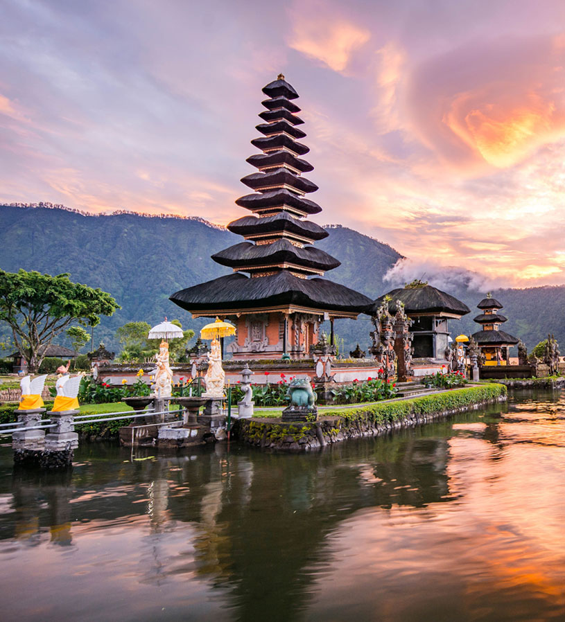
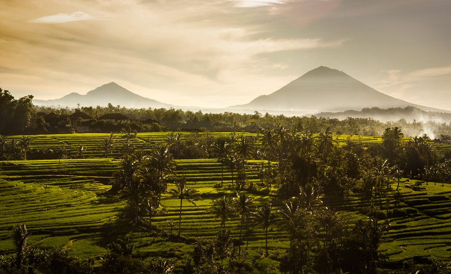

Places I Visited.
Malaysia Tokyo Bali

The catchy tourism slogan Malaysia, Truly Asia continues to ring true as this country really is a crossroads for so many Asian cultures.
Muslim Malays, religiously diverse Chinese,and Hindu and Muslim Indians live here, along with the indigenous people of Peninsular Malaysia and Borneo.
Each culture has its own language and practices, which you can appreciate through a packed calendar of festivals and a delicious variety of cuisines.
Malaysias capital KLis a place where gleaming 21st-century towers stand cheek-by-jowl with colonial shophouses and pockets of lush greenery, while shoppers shuttle from traditional markets to air-conditioned mega malls. Unesco World Heritage–listed, Melaka and George Town (Penang) have uniquely distinctive architectural and cultural townscapes, developed over a half a millennium of Southeast Asian cultural and trade exchange. Over in the eastern Malaysian states, both Kuching and Kota Kinabalu offer fascinating introductions to life on Borneo.
 Tokyo, is located in the Kanto region on the island of Honshu in Japan.
It is counted as one of the 47 prefectures of Japan and commonly referred to as the capital of Japan with the government of Japanand the Emperor of Japan residing in Chiyoda Ward.
Tokyo is a place where the urgent rhythms of consumer culture collide with the quieter moments that linger from older traditions.
It's hectic madnessleavened by the Zennest of calms. With a population of over 12 million, or about 10 percent of Japans populaton,
it is by far the country's most populous and most densely populated prefecture. Tokyo remains a glistering example of the 'miracle' of post-WWII Japan.

The magical island where traditional cultures wholeheartedly cultivate from generation to generation then spread out its beauty to the world.
Bali was seen as relatively lowly populated idyllic Hindu island. It became popular as a cruise ship stopover, then travelers and backpackers.
This tourism bred further tourism when the rest of Indonesia was perceived as overcrowded and dirty.
Fast forward to today and Bali has lost most of its unique charm. it has become much like every other Indonesian city.
Balis popularity has effectively killed the “golden goose”. Its once popular beaches are literally choked with plastic making swimming unpleasant.
Now, Bali is even more popular with the island becoming popular with Chinese and Russian tourists.
Long gone are the culture and attractions that made Bali a friendly and colourful attraction.

The wonderful views of bali is extrawdinary.
The lights of tokyo is mesmerizing.
Written by vishnu